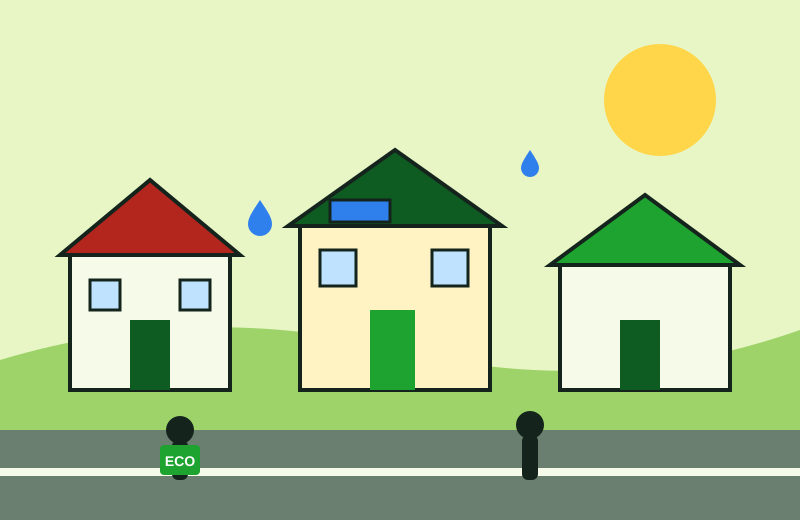

O mosquito
Como o Aedes aegypti nasce, onde vive e por que o ciclo fecha em poucos dias.
ONG sem fins lucrativos
O impacto da dengue na sociedade — e o que um bairro pode fazer antes da próxima chuva.
Levamos informação sobre o Aedes aegypti para escolas, praças e associações, em linguagem simples e acessível.

Em números
Fonte: Ministério da Saúde, Nota Informativa nº 12/2025-CGARB/DEDT/SVSA/MS (alerta sobre aumento de casos de DENV-3 para 2025/2026). Dados sujeitos a revisão.
Como o Aedes aegypti nasce, onde vive e por que o ciclo fecha em poucos dias.
Dengue, zika e chikungunya: sinais, cuidados e sinais de alarme.
Vacina, vigilância e ações da ONG, com filtro por assunto.
Vídeo, áudio com dica da semana e vídeo da varredura com legendas.
Agenda 2030
ODS 3 (Saúde e Bem-estar), ODS 6 (Água Potável e Saneamento) e ODS 11 (Cidades e Comunidades Sustentáveis). Entenda a ligação.
Assistente do site
Escolha uma pergunta. As respostas são textos prontos escritos pela equipe (não é inteligência artificial).
Clique em uma pergunta para ver a resposta.